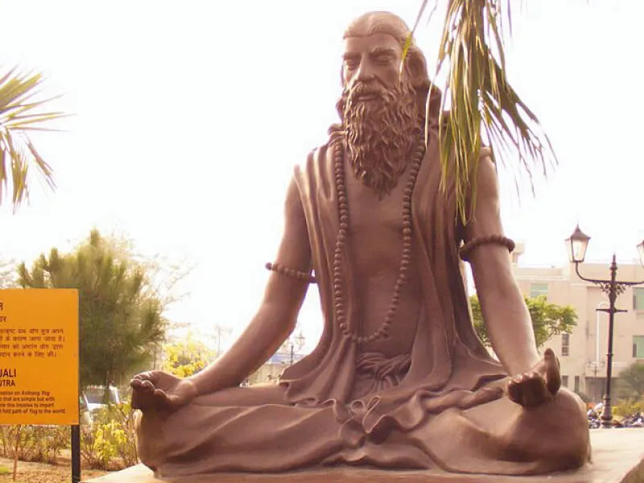

Who Was Patañjali?
Patañjali is the name traditionally associated with the Yoga Sūtras, one of the most influential philosophical texts of the classical Yoga tradition of India. The work presents a systematic account of yoga and examines the nature of the mind, consciousness, ethical discipline, meditation, concentration, samādhi, and the attainment of liberation.
Very little is known with certainty about the historical person behind the Yoga Sūtras. The text itself provides almost no reliable biographical information, and the precise date of its composition remains a subject of scholarly debate. Many scholars place the formation of the text within the early centuries of the Common Era, while some scholarship dates the surviving form of the work to approximately the fourth century CE.
Patañjali's importance in Indian philosophy therefore rests primarily on the philosophical system preserved in the Yoga Sūtras rather than on a securely established biography. The text became foundational for the classical Yoga school and provided a highly influential account of the discipline through which the disturbances and modifications of the mind can be understood and ultimately brought under control.
Classical Yoga has a particularly close philosophical relationship with Sāṃkhya. Both traditions employ important concepts such as puruṣa, the principle of pure consciousness, and prakṛti, the material and psychological principle responsible for the changing world. Yoga, however, places particular emphasis on practical discipline, meditation, and the systematic transformation of consciousness as a path toward liberation.
The figure known as Patañjali should also be distinguished from other historical or traditional figures who bear the same name. Later Indian tradition sometimes associated the author of the Yoga Sūtras with the famous grammarian Patañjali, but modern scholarship generally treats such identifications with caution. For this reason, the safest historical approach is to focus on the Yoga Sūtras and the philosophical tradition associated with them rather than claiming detailed knowledge of Patañjali's personal life.
Patañjali: Quick Facts
- Name — Patañjali
- Tradition — Classical Yoga philosophy
- Major text associated with him — Yoga Sūtras
- Philosophical tradition — Āstika / orthodox Indian philosophy
- Major subjects — Yoga, meditation, consciousness, ethics, samadhi, knowledge, and liberation
- Central goal — Kaivalya, or liberation through the isolation of puruṣa from prakṛti
- Associated concepts — Citta, vṛtti, samadhi, abhyāsa, vairāgya, puruṣa, prakṛti, and kaivalya
- Historical evidence — Limited direct biographical evidence
- Important distinction — The identification of the author of the Yoga Sūtras with the grammarian Patañjali associated with the Mahābhāṣya is debated
Patañjali and Classical Indian Philosophy

Classical Indian philosophy developed through several major intellectual traditions that investigated fundamental questions concerning reality, consciousness, knowledge, suffering, ethical conduct, and liberation. These traditions developed distinctive philosophical systems while also engaging with one another through debate, commentary, and the interpretation of shared concepts and religious ideas.
Yoga eventually became recognized as one of the major orthodox, or āstika, systems of Indian philosophy. In its classical philosophical form, Yoga was concerned not primarily with physical exercise but with the disciplined transformation of consciousness and the conditions necessary for liberation from suffering and bondage.
The Yoga Sūtras present yoga as a systematic contemplative path. Its practices include ethical restraints, personal observances, bodily discipline, breath regulation, withdrawal of the senses, concentration, meditation, and samādhi. These elements are directed toward the cultivation of increasingly stable and disciplined states of consciousness.
Patañjali's philosophical system is closely connected with Sāṃkhya, another major tradition of classical Indian philosophy. Both systems employ an important distinction between puruṣa, associated with pure consciousness, and prakṛti, the source of material and psychological processes. Human suffering and bondage arise when consciousness becomes mistakenly identified with the changing processes of experience.
Classical Yoga develops this philosophical framework through a particularly strong emphasis on disciplined practice. While Sāṃkhya provides much of the metaphysical background for understanding consciousness and nature, Yoga concentrates on the practical methods through which the practitioner can transform the mind, cultivate discriminating knowledge, and ultimately move toward liberation or kaivalya.
What Are the Yoga Sūtras of Patañjali?
The Yoga Sūtras of Patañjali are a concise Sanskrit philosophical text composed of short aphoristic statements, or sūtras, concerning yoga, consciousness, meditation, suffering, discipline, and liberation. Because of their condensed style, the text has historically required interpretation and has generated an extensive tradition of commentaries.
The work became one of the principal textual foundations of the philosophical tradition known as classical Yoga. It presents a systematic account of the problems associated with mental activity and describes practices intended to transform consciousness and free the puruṣa from mistaken identification with the changing processes of prakṛti.
Rather than presenting a modern system of physical exercise, the Yoga Sūtras investigate the mind, perception, meditation, ethical discipline, consciousness, suffering, and liberation. Bodily posture is included within the system, but it represents only one element within a much broader philosophical and contemplative discipline.
The Yoga Sūtras are traditionally divided into four sections: Samādhi Pāda, Sādhana Pāda, Vibhūti Pāda, and Kaivalya Pāda. These sections address the nature of yoga and meditative absorption, the practical discipline required for spiritual progress, the powers or attainments associated with advanced practice, and the final condition of liberation.
The structure of the text shows that Patañjali's system combines philosophical analysis with practical discipline. Understanding the nature of consciousness is important, but intellectual understanding alone is not presented as sufficient. The practitioner must also cultivate ethical discipline, concentration, meditation, detachment, and sustained practice in order to move toward the ultimate goal of kaivalya.
What Is Yoga According to Patañjali?
In the Yoga Sūtras, yoga is famously defined as citta-vṛtti-nirodha, commonly understood as the stilling, restraint, or cessation of the fluctuations and modifications of the mind. This definition appears near the beginning of the text and establishes the central philosophical concern of Patañjali's system.
The Sanskrit term citta refers broadly to the mental apparatus through which thought, perception, memory, imagination, and other psychological processes occur. The vṛttis are its movements, modifications, or patterns of activity. Classical Yoga is therefore deeply concerned with understanding how these processes shape human experience.
The goal is not simply to acquire physical flexibility, bodily strength, or temporary relaxation. Yoga is fundamentally concerned with the transformation of consciousness so that the distinction between the conscious puruṣa and the changing processes of prakṛti can be directly and discriminately understood.
Patañjali presents practice and detachment as important means for working with mental activity. Through sustained discipline, the practitioner gradually develops greater stability and moves toward increasingly refined states of concentration and meditation rather than remaining continually distracted by changing thoughts, desires, and sensory impressions.
In this sense, yoga is both a philosophical analysis and a practical path. The system explains why human beings become bound to changing experience while also providing methods intended to transform that condition. The ultimate purpose is the attainment of liberation, in which consciousness is no longer confused with the mental and material processes through which ordinary experience takes place.
The Eight Limbs of Yoga in Patañjali's Philosophy
One of the most famous teachings associated with Patañjali is the eight-limbed path of yoga, or aṣṭāṅga yoga. Presented in the Sādhana Pāda of the Yoga Sūtras, the eight limbs describe an interconnected discipline involving ethical conduct, bodily and mental preparation, concentration, meditation, and advanced states of contemplative absorption.
The eight limbs should not necessarily be understood as a simple mechanical ladder that every practitioner completes once before moving permanently to the next stage. They form a broader framework in which ethical discipline, self-regulation, bodily practice, sensory control, and meditative training support one another in the transformation of consciousness.
1. Yama — Ethical Restraints
The yamas are ethical restraints that regulate a person's conduct toward others. They include ahimsa or nonviolence, truthfulness, non-stealing, brahmacharya or disciplined restraint, and non-possessiveness. These principles establish an ethical foundation for the broader discipline of Yoga.
Their importance shows that Patañjali's system does not treat meditation as something entirely separate from everyday conduct. The cultivation of a stable and disciplined consciousness is connected with how a person acts, speaks, desires, and relates to other living beings and material possessions.
2. Niyama — Observances
The niyamas concern personal observances and forms of self-discipline. They include purity, contentment, austerity or disciplined practice, self-study, and devotion or surrender to Īśvara. Together, these practices are intended to cultivate discipline and orient the practitioner toward the larger goal of Yoga.
The inclusion of self-study and devotion also demonstrates that classical Yoga cannot be reduced to a purely technical system of mental control. Patañjali's framework includes reflection on the self, disciplined transformation, and a distinctive role for Īśvara within the broader philosophical structure of Yoga.
3. Āsana — Posture
Āsana refers to posture. In the Yoga Sūtras, however, the discussion of posture is considerably more concise than the extensive systems of physical postures developed in many later traditions of yoga. The classical text emphasizes the development of a stable and suitable posture for contemplative practice.
This difference is important for understanding the historical development of yoga. Modern postural yoga contains extensive systems of physical exercises that should not simply be projected backward onto Patañjali's relatively brief treatment of āsana within a much larger contemplative philosophy.
4. Prāṇāyāma — Regulation of Breath
Prāṇāyāma concerns the regulation and disciplined control of breathing. It follows the discussion of posture and forms part of the preparation for increasingly refined states of attention and concentration.
Within the larger structure of Yoga, breath regulation is connected with the relationship between bodily processes and mental activity. The discipline of breathing helps prepare the practitioner for practices that require greater stability and withdrawal from ordinary sensory distraction.
5. Pratyāhāra — Withdrawal of the Senses
Pratyāhāra involves the withdrawal or turning inward of the senses from their ordinary engagement with external objects. Instead of allowing attention to remain continually directed outward, the practitioner begins to develop greater independence from immediate sensory stimulation.
This stage provides an important transition between the more externally oriented forms of discipline and the increasingly internal practices of concentration and meditation. It reflects the central Yogic concern with reducing distraction and developing greater mastery over the processes that ordinarily direct attention.
6. Dhāraṇā — Concentration
Dhāraṇā is the practice of fixing or binding the mind to a chosen object, point, or field of attention. The practitioner attempts to stabilize consciousness rather than allowing attention to move continually between different thoughts, sensations, memories, and external objects.
Concentration is therefore an important stage in the progressive refinement of consciousness. It develops the capacity for sustained attention and prepares the conditions in which meditative awareness can become more continuous and less fragmented.
7. Dhyāna — Meditation
Dhyāna refers to sustained meditative attention. Whereas concentration involves directing and holding the mind toward an object, meditation represents a more continuous flow of attention in which the interruptions and distractions of ordinary consciousness are increasingly reduced.
Meditation occupies a central position in Patañjali's philosophical path because it allows the practitioner to move beyond ordinary patterns of scattered mental activity. Through sustained contemplative discipline, consciousness becomes increasingly capable of deeper and more refined forms of awareness.
8. Samādhi — Meditative Absorption
Samādhi represents advanced states of meditative absorption and is one of the central concepts of the Yoga Sūtras. Patañjali distinguishes different forms and levels of samādhi, reflecting progressively refined relationships between consciousness and the objects or processes of meditation.
These advanced states play an important role in the transformation of consciousness and the path toward liberation. In the broader philosophical system of classical Yoga, the ultimate aim is not simply the experience of an extraordinary meditative state but the attainment of kaivalya, the liberation or isolation of puruṣa from mistaken identification with prakṛti and its changing processes.
Patañjali's Philosophy of Mind and Consciousness
The Yoga Sūtras devote substantial attention to the functioning of the mind and to the ways in which mental activity shapes human experience. The term citta is central to this discussion and refers broadly to the mental field through which thought, perception, memory, imagination, and other psychological processes take place.
Patañjali's philosophical concern is not simply with the content of individual thoughts. The more fundamental problem is the continual movement and modification of the mental field, described through the concept of vṛtti. Human experience is ordinarily shaped by these changing processes, and consciousness becomes entangled with the activities of the mind rather than clearly recognizing its own distinct nature.
The Yoga Sūtras identify several important forms of mental activity, including correct cognition, incorrect cognition, conceptual construction, sleep, and memory. These activities are not all treated as equally harmful in themselves, but they belong to the changing processes that must be understood and ultimately brought under disciplined control.
Habitual patterns, memories, attachments, and mistaken forms of cognition can reinforce suffering and bondage. The philosophical problem therefore involves mistaken identification: the witnessing consciousness, puruṣa, becomes confused with the changing mental processes that belong to the domain of prakṛti.
Yoga practice is presented as a means of transforming this condition. Through sustained discipline, concentration, meditation, and detachment, the practitioner gradually develops a more stable and refined awareness. The ultimate purpose is not the destruction of consciousness but the removal of confusion concerning the relationship between pure consciousness and the changing activities of the mind.
Patañjali on Puruṣa and Prakṛti
A central philosophical distinction in the classical Yoga tradition is between puruṣa and prakṛti. This distinction is closely related to the metaphysical framework of Sāṃkhya and provides the foundation for Patañjali's explanation of consciousness, experience, bondage, and liberation.
The two principles represent fundamentally different aspects of reality. Puruṣa is associated with consciousness and witnessing, whereas prakṛti is associated with nature and the changing processes that produce the material, psychological, and sensory world of ordinary experience.
Puruṣa — Pure Consciousness
Puruṣa represents pure consciousness or the witnessing principle. It is distinguished from thought, memory, emotion, bodily sensation, and other changing processes. Although ordinary experience often creates the impression that consciousness is identical with the mind or personality, classical Yoga treats puruṣa as fundamentally distinct from these changing phenomena.
The philosophical problem arises because consciousness appears to become identified with the activities of the mind. A person may therefore mistake thoughts, emotions, memories, social identities, and bodily experiences for the ultimate nature of the self. Yogic discipline is intended to cultivate the discriminating knowledge necessary to overcome this confusion.
Prakṛti — Nature
Prakṛti refers to primordial nature and to the domain of material and phenomenal processes. Within the classical Yoga and Sāṃkhya framework, the mind, senses, body, and external world belong to the changing realm of prakṛti.
Prakṛti is therefore not limited to what modern language might describe as external physical nature. Mental and psychological processes are also part of its transformations. Thoughts and emotions may appear highly personal, but within this philosophical system they remain changing phenomena rather than identical with pure consciousness itself.
According to the Yoga philosophical framework, bondage arises partly from the failure to distinguish puruṣa from prakṛti. Liberation involves a decisive discriminating realization of their difference. When consciousness is no longer confused with the changing processes of nature, the conditions necessary for kaivalya can be attained.
Patañjali's Five Kleśas and the Causes of Suffering
Patañjali explains human suffering and bondage partly through the concept of kleśas, commonly translated as afflictions or causes of suffering. These deeply rooted tendencies shape perception, desire, behavior, and attachment, making it difficult for the individual to achieve the clarity and freedom sought through Yoga.
The five kleśas are closely connected rather than completely isolated psychological problems. Fundamental ignorance produces mistaken identification, while attachment, aversion, and clinging to continued existence reinforce the patterns through which suffering and bondage continue.
Avidyā — Ignorance
Avidyā is fundamental ignorance or misunderstanding concerning the nature of reality. Patañjali describes it as confusing the impermanent with the permanent, the impure with the pure, suffering with happiness, and the non-self with the self. It therefore represents a deep distortion in the way experience is ordinarily understood.
Avidyā is regarded as the fundamental affliction because the other kleśas develop within conditions of ignorance. Without a clear understanding of the distinction between consciousness and the changing processes of experience, the individual remains vulnerable to mistaken identification and attachment.
Asmitā — Egoity
Asmitā involves egoity or the mistaken identification of the witnessing consciousness with the instruments through which cognition takes place. In simple terms, the distinction between the one who is conscious and the changing processes through which experience occurs becomes obscured.
This should not automatically be understood as identical with every modern psychological use of the word "ego." Within Patañjali's philosophical framework, the problem is specifically a metaphysical and cognitive confusion concerning the identity of consciousness and the processes of the mind.
Rāga — Attachment
Rāga is attachment arising from experiences regarded as pleasant or desirable. When the mind repeatedly seeks to reproduce pleasurable experiences, desire can become a powerful force directing attention and behavior.
Yoga does not simply deny that pleasant experiences occur. The philosophical concern is the dependence and bondage created when consciousness becomes continually driven by the desire to obtain, preserve, or repeat particular experiences and objects.
Dveṣa — Aversion
Dveṣa is aversion associated with experiences regarded as painful, unpleasant, or threatening. Just as attachment draws the mind toward what it desires, aversion can dominate consciousness through resistance, fear, hostility, and the continual attempt to escape undesirable experiences.
Attachment and aversion together reveal how strongly ordinary consciousness can be shaped by attraction and rejection. The disciplined practitioner seeks greater freedom from these automatic patterns rather than allowing every pleasant or painful experience to determine the direction of the mind.
Abhiniveśa — Clinging to Life
Abhiniveśa is a deeply rooted tendency toward clinging to continued existence and is traditionally associated with the fear of death. Patañjali presents it as a particularly deep and persistent affliction that can operate even in those considered knowledgeable or learned.
The concept demonstrates the depth of the psychological and existential analysis found in the Yoga Sūtras. Liberation requires more than changing isolated habits; it involves addressing the fundamental patterns of ignorance, identification, desire, aversion, and existential clinging that sustain bondage.
Practice and Detachment in Patañjali's Yoga Philosophy
Patañjali identifies practice (abhyāsa) and detachment (vairāgya) as fundamental means for bringing the fluctuations of the mind under disciplined control. These two principles work together throughout the philosophical path described in the Yoga Sūtras.
Practice involves sustained effort toward establishing and maintaining a stable condition of consciousness. It is not presented as a single moment of insight or an occasional activity but as a disciplined process requiring continuity, commitment, and long-term cultivation.
Patañjali emphasizes that practice becomes firmly grounded when it is pursued for a long time, without interruption, and with serious commitment. This reflects the larger Yogic understanding that the transformation of deeply established mental tendencies requires repeated and sustained discipline rather than temporary enthusiasm.
Detachment, or vairāgya, concerns freedom from compulsive dependence upon objects of desire and experience. It does not necessarily mean complete indifference to everything that occurs. Rather, it involves reducing the power of craving and possessiveness over the direction of consciousness.
Together, practice provides the positive discipline through which the mind becomes increasingly stable, while detachment reduces the force of attractions that continually disturb that stability. Their combination provides an important foundation for the progressive development of concentration, meditation, and deeper forms of contemplative awareness.
What Is Samādhi in Patañjali's Philosophy?
Samādhi is one of the most important and complex concepts in the Yoga Sūtras. It refers broadly to advanced states of meditative absorption in which the ordinary distractions and fluctuations of the mind are progressively overcome and consciousness becomes deeply stabilized.
Samādhi should not be understood as merely relaxation or as ordinary concentration. Within Patañjali's philosophical system, it represents a highly developed condition of contemplative awareness connected with the examination of objects, the refinement of cognition, and the progressive transformation of consciousness.
Patañjali distinguishes different forms and levels of samādhi. Some involve a remaining relationship between consciousness and an object or content of meditation, while more refined forms involve increasingly subtle conditions in which ordinary conceptual and mental activity is further reduced.
These distinctions demonstrate that samādhi is not presented as one simple, uniform experience. The Yoga Sūtras describe a progressive contemplative discipline in which the practitioner moves toward increasingly refined forms of meditative awareness and freedom from the disturbances that ordinarily dominate the mind.
Ultimately, samādhi is connected with knowledge and liberation. Advanced meditative states help create the conditions in which the distinction between puruṣa and prakṛti can be clearly understood. The final philosophical goal, however, is not simply the temporary experience of absorption but the attainment of the lasting liberation known as kaivalya.
What Is Kaivalya in Patañjali's Philosophy?
Kaivalya is the ultimate goal described in the Yoga Sūtras. The term is commonly translated as isolation, aloneness, or absolute independence, although these English translations can be misleading if understood in an ordinary social sense.
In the philosophical context of classical Yoga, kaivalya refers to the complete liberation or isolation of puruṣa, pure consciousness, from prakṛti and its changing processes. It marks the end of the mistaken identification through which consciousness appears to become bound to mental, bodily, and material experience.
Ordinary experience is characterized by continual change. Thoughts, emotions, memories, bodily conditions, and sensory experiences arise and disappear. Bondage occurs when the witnessing consciousness fails to distinguish itself from these processes and therefore treats their changing conditions as its own ultimate nature.
Liberation therefore does not simply mean achieving temporary happiness, emotional comfort, or an unusual mystical experience. It represents a fundamental philosophical transformation in which the distinction between pure consciousness and the processes of nature is fully and decisively realized.
Kaivalya provides the ultimate framework for understanding the practices described throughout the Yoga Sūtras. Ethical discipline, detachment, concentration, meditation, and samādhi are not isolated goals. They form parts of a larger path directed toward freedom from ignorance, mistaken identification, and the continuing bondage associated with prakṛti.
What Is Īśvara in Patañjali's Yoga Philosophy?
Patañjali's Yoga system includes a distinctive discussion of Īśvara, often described as a special or unique puruṣa. Īśvara is presented as fundamentally untouched by the afflictions, actions, consequences of actions, and latent impressions that affect ordinary beings.
The role of Īśvara in the Yoga Sūtras has been interpreted in different ways by scholars and later commentators. Patañjali's concept does not fit perfectly into every later theological understanding of a creator God, and it should therefore be understood within the specific metaphysical and contemplative framework of classical Yoga.
Patañjali presents Īśvara-praṇidhāna, commonly translated as devotion or surrender to Īśvara, as an important form of practice. Devotion to Īśvara is presented as one possible means of developing concentration and progressing along the path toward meditative absorption.
Īśvara is also associated with the sacred syllable Om (praṇava). The repetition and contemplation of this syllable are presented within the text as practices connected with the orientation of consciousness toward Īśvara and the overcoming of obstacles to meditation.
The presence of Īśvara is one important reason the Yoga philosophical tradition should not simply be equated with classical Sāṃkhya. Although the two systems share substantial metaphysical terminology, including the distinction between puruṣa and prakṛti, Patañjali's Yoga gives Īśvara a specific philosophical and practical role within its path of meditation and liberation.
Patañjali's Ethical Philosophy
Ethics forms an important foundation of Patañjali's eight-limbed yoga. The yamas and niyamas establish principles of conduct and personal discipline that support the wider practice of yoga. In this framework, ethical life is not entirely separate from meditation, because patterns of harmful action, attachment, conflict, and mental disturbance can interfere with the cultivation of concentration and clarity.
The ethical dimension of Yoga therefore begins before the more advanced stages of concentration and meditative absorption. Patañjali's path presents the transformation of the practitioner as involving conduct, habits, attitudes, bodily discipline, and the cultivation of consciousness. Ethical practice helps establish conditions in which the mind can become less disturbed and more capable of sustained attention.
The Yamas — Ethical Restraints
The five yamas are principles of restraint that regulate a person's relationship with other beings and with the world. They are ahiṃsā (nonviolence), satya (truthfulness), asteya (non-stealing), brahmacarya, and aparigraha (non-possessiveness). Together, these principles address violence, dishonesty, exploitation, excess, and possessive attachment.
Ahiṃsā, or nonviolence, is particularly important in the ethical tradition associated with Yoga. It concerns the avoidance of harm and establishes a broader orientation toward one's actions and relationships. Satya concerns truthfulness, while asteya prohibits taking what has not been given. These principles connect ethical conduct with the disciplined transformation of the practitioner.
The meaning of brahmacarya has been interpreted in different ways within Indian traditions and is often associated with sexual restraint, disciplined conduct, or the careful conservation and direction of one's energies. Aparigraha, meanwhile, concerns non-grasping and freedom from excessive possessiveness. It reflects the broader Yogic concern with reducing attachment to objects and experiences.
The Niyamas — Personal Observances
The five niyamas concern personal discipline and the cultivation of particular attitudes and practices. They are śauca (purity), saṃtoṣa (contentment), tapas (discipline or austerity), svādhyāya (self-study), and Īśvara-praṇidhāna (devotion or surrender to Īśvara). These observances direct attention toward the practitioner's own habits, discipline, reflection, and spiritual orientation.
Śauca concerns purity or cleanliness, while saṃtoṣa emphasizes contentment rather than continual dissatisfaction and craving. Tapas refers to disciplined effort and the willingness to sustain demanding practice. In this context, discipline is not simply an external rule but forms part of the broader training required for transforming habitual patterns of mind and behavior.
Svādhyāya is commonly translated as self-study and can involve reflection, study, and engagement with sacred or philosophical teachings. Īśvara-praṇidhāna concerns a devotional orientation toward Īśvara, whose distinctive role in Patañjali's philosophical system separates Yoga in some respects from classical Sāṃkhya. Together, the yamas and niyamas show that the path of Yoga begins with a comprehensive discipline of life rather than meditation alone.
Patañjali and Sāṃkhya Philosophy
Patañjali's Yoga philosophy shares a substantial portion of its metaphysical framework with Sāṃkhya, one of the major philosophical traditions of classical India. Both systems distinguish between consciousness and the changing processes of material nature, and both explain bondage partly through a failure to recognize this fundamental distinction clearly.
A central feature of this shared framework is the distinction between puruṣa and prakṛti. Puruṣa is associated with consciousness or the witnessing principle, whereas prakṛti is associated with the material and phenomenal processes from which the mind, senses, and experienced world develop. The processes of thought and perception therefore belong to the changing domain of prakṛti rather than to pure consciousness itself.
This distinction has major consequences for Patañjali's account of human suffering and liberation. Ordinary experience is shaped by identification between consciousness and the activities of the mind. Thoughts, emotions, memories, perceptions, and desires are experienced as though they constitute the deepest identity of the self. Yoga seeks to transform this condition through disciplined practice and increasingly refined forms of meditative awareness.
The relationship between Yoga and Sāṃkhya is particularly important because it shows that Patañjali's system did not develop in philosophical isolation. Yoga participated in a wider intellectual environment in which philosophers investigated consciousness, causation, nature, suffering, knowledge, and liberation. The Yoga tradition adopted important metaphysical concepts while giving them a distinctive practical and contemplative orientation.
The distinctive emphasis of Patañjali's Yoga lies especially in its systematic treatment of practice, meditation, concentration, and the transformation of consciousness. The Yoga Sūtras are concerned not only with describing reality but also with explaining how a practitioner can undertake a disciplined path toward liberation. This practical orientation makes Yoga a philosophical system closely connected with a structured program of spiritual and contemplative practice.
Another important difference concerns the role of Īśvara. Patañjali presents Īśvara as a special puruṣa and includes devotion to Īśvara as a possible means toward concentration. For this reason, although Yoga and Sāṃkhya share much philosophical vocabulary and metaphysical structure, they should not simply be treated as identical systems. Their historical relationship is close, but the traditions developed distinctive philosophical and practical concerns.
The Four Chapters of the Yoga Sūtras
The Yoga Sūtras are traditionally organized into four major sections, known as pādas. Together, these chapters develop a philosophical account of the nature of yoga, the causes of human bondage, the disciplines of practice, advanced states of meditation, and the attainment of liberation.
Although the four chapters address different subjects, they are connected by a common concern with the transformation of consciousness. The text moves between philosophical analysis and practical instruction, showing how ethical discipline, detachment, concentration, and meditation contribute to the larger goal of distinguishing consciousness from the changing processes of nature.
Samādhi Pāda
The first section, Samādhi Pāda, introduces the fundamental philosophical definition of yoga and examines the fluctuations of the mind. It discusses the restraint of mental activity, the role of practice and detachment, different forms of concentration, and the nature of meditative absorption or samādhi.
This chapter establishes the central problem addressed throughout the Yoga Sūtras: consciousness ordinarily becomes entangled with changing mental processes. By developing stability and reducing distraction, the practitioner moves toward increasingly refined states of awareness. The chapter also introduces the distinctive role of Īśvara and devotion as one possible aid to concentration.
Sādhana Pāda
The second section, Sādhana Pāda, focuses more directly on the practical path of yoga. It discusses kriyā yoga, the causes of suffering known as the kleśas, karma, and the disciplines required for overcoming ignorance and attachment.
This chapter also contains the famous account of the eight limbs of yoga, or aṣṭāṅga yoga. These include ethical restraints, personal observances, posture, breath regulation, withdrawal of the senses, concentration, meditation, and samādhi. The structure demonstrates that Yoga is conceived as a comprehensive discipline rather than a practice limited to physical exercise or seated meditation.
Vibhūti Pāda
The third section, Vibhūti Pāda, examines advanced stages of concentration and the close relationship between concentration, meditation, and samādhi. These three practices are sometimes treated together in the text as an integrated discipline directed toward increasingly profound forms of insight and transformation.
The chapter also discusses unusual abilities or siddhis traditionally associated with advanced meditative practice. These descriptions have attracted considerable attention, but they should not obscure the larger philosophical purpose of the text. The Yoga Sūtras repeatedly treat attachment as a potential obstacle, and extraordinary attainments do not themselves constitute liberation.
Kaivalya Pāda
The final section, Kaivalya Pāda, focuses on liberation, the nature of consciousness, karma, transformation, and the ultimate attainment of kaivalya. It develops some of the most philosophically complex discussions in the Yoga Sūtras concerning the relationship between puruṣa, prakṛti, mental processes, and liberation.
Kaivalya represents the culmination of the Yogic path in which pure consciousness is no longer confused with the changing activities of prakṛti. The final chapter therefore returns to the central philosophical distinction underlying the system and explains liberation as a decisive freedom from the ignorance that produces mistaken identification and continued bondage.
What Do We Actually Know About Patañjali?
Historical information about Patañjali is limited. Unlike philosophers such as Plato or Aristotle, there is no secure autobiographical record that allows historians to reconstruct his life in detail. The name Patañjali is attached to important Indian intellectual traditions, but determining exactly which historical individual or individuals stood behind those traditions remains difficult.
For this reason, Patañjali should be approached differently from a historical figure whose biography is documented through contemporary evidence. His philosophical importance rests primarily on the Yoga Sūtras and the intellectual tradition that developed around that text. Questions concerning authorship, date, and textual formation remain subjects of scholarly investigation.
It is therefore useful to distinguish between what is relatively well established about the Yoga tradition, what later tradition attributes to Patañjali, and what remains historically uncertain. This distinction prevents legendary or traditional accounts from being presented as established historical facts while still recognizing their importance within the history of Indian thought.
Relatively Well Established
- The Yoga Sūtras are the central text traditionally associated with the name Patañjali.
- The text became foundational to the classical Yoga philosophical tradition and later commentarial traditions.
- The Yoga Sūtras present a systematic philosophy of meditation, consciousness, ethical discipline, practice, and liberation.
- The philosophical framework of classical Yoga is closely related to Sāṃkhya, particularly in its distinction between puruṣa and prakṛti.
- The text has exercised major influence on the later history of Yoga and on modern understandings of the philosophical tradition of yoga.
These points concern the historical importance and philosophical content of the text rather than a detailed biography of its author. Scholars can study the Yoga Sūtras, their commentarial history, and their intellectual influence even when the precise historical identity of Patañjali remains uncertain.
Traditionally Attributed
- The authorship or compilation of the Yoga Sūtras by a figure known as Patañjali.
- The identification of the Patañjali associated with Yoga with the famous Sanskrit grammarian traditionally associated with the Mahābhāṣya.
- Various later biographical and religious traditions concerning Patañjali's identity and significance.
Traditional attribution remains historically important, but attribution is not identical to certainty. Indian intellectual traditions often preserved texts through long processes of commentary, transmission, and reverence for authoritative teachers. Modern historical scholarship therefore asks separate questions about when texts were composed, how they developed, and whether different works attributed to the same name actually originated from the same historical person.
Uncertain or Disputed
- The precise date of the author traditionally called Patañjali and the exact date of the Yoga Sūtras.
- The detailed historical biography of the person or persons behind the text.
- Whether the Patañjali of the Yoga Sūtras and the Patañjali associated with the Mahābhāṣya were the same historical individual.
- The exact process through which the Yoga Sūtras reached their surviving textual form.
- The precise relationship between the sūtras and the early commentarial tradition that became central to their interpretation.
These uncertainties do not diminish the philosophical importance of the Yoga Sūtras. Instead, they remind us that the history of ancient and classical Indian philosophy must often distinguish carefully between a text's intellectual authority and the amount of securely documented information available about its author. Patañjali remains one of the most influential names in the history of Yoga even though the historical biography behind that name cannot be reconstructed with confidence.
Did Patañjali Write the Mahābhāṣya?
A major historical question concerns the relationship between the Patañjali associated with the Yoga Sūtras and the Patañjali associated with the Mahābhāṣya, one of the most important works in the Sanskrit grammatical tradition. The Mahābhāṣya is connected with the grammatical system of Pāṇini and represents a major contribution to the intellectual history of Sanskrit linguistics and grammatical analysis.
Later Indian tradition often identified the author of the Yoga Sūtras and the author of the Mahābhāṣya as the same person. This identification contributed to the image of Patañjali as an exceptionally wide-ranging intellectual figure associated with both Yoga philosophy and Sanskrit grammar. In some traditional accounts, further works have also been associated with his name.
Modern historical scholarship, however, approaches this identification with caution. The works associated with the name Patañjali belong to different intellectual contexts, and the available evidence does not allow historians to establish with certainty that a single historical individual wrote both the Yoga Sūtras and the Mahābhāṣya.
Chronology is one important reason for scholarly debate. The traditional dating and historical contexts associated with the grammatical Patañjali and the formation of the Yoga Sūtras have led scholars to question whether the works can confidently be assigned to the same author. Questions about the dating and textual development of the Yoga Sūtras make the issue even more complex.
The problem also illustrates a broader difficulty in the study of ancient Indian intellectual history. A respected name may become associated over time with multiple texts and traditions, especially when later communities attempt to organize their intellectual heritage around authoritative figures. Traditional attribution can preserve an important history of reception without necessarily proving modern historical authorship.
For this reason, it is safer to describe the Yoga Sūtras as traditionally attributed to Patañjali and to avoid stating as an unquestionable historical fact that the same individual wrote both the Yoga Sūtras and the Mahābhāṣya. The traditional identification remains important to the history of Indian thought, but the historical evidence should be presented with appropriate scholarly caution.
Patañjali's Influence on Indian Philosophy and Yoga
The Yoga Sūtras became one of the most influential philosophical sources for later discussions of yoga, meditation, consciousness, and liberation in India. Although the historical details surrounding Patañjali remain uncertain, the text traditionally associated with his name acquired an important position within the development of classical Yoga philosophy.
The text generated a long tradition of commentary and philosophical interpretation. The Yoga Bhāṣya, traditionally attributed to Vyāsa, became particularly important for the later understanding of the Yoga Sūtras. Modern scholarship has also debated the historical relationship between the sūtras and this commentary, including whether they may have been transmitted or developed together in the form known to later tradition.
Patañjali's influence extends beyond meditation understood as a practical technique. The Yoga Sūtras offer a philosophical analysis of mental activity, perception, suffering, ethical discipline, concentration, and liberation. These questions place the work within the wider intellectual traditions of Indian philosophy rather than limiting it to the history of physical or devotional practice.
The close relationship between Yoga and Sāṃkhya also made the Yoga Sūtras important for later discussions of metaphysics and consciousness. The distinction between puruṣa and prakṛti, together with the analysis of mental processes and bondage, provided a framework through which philosophers could investigate the relationship between consciousness, experience, and the changing world.
Over many centuries, interpreters, commentators, teachers, and later yoga traditions approached the Yoga Sūtras in different ways. Its influence has therefore not remained fixed to a single interpretation. The historical importance of Patañjali lies both in the philosophical system associated with the text and in the long tradition of interpretation that developed around it.
Patañjali's Philosophy and Modern Yoga
Patañjali's name is widely recognized today because of the global popularity of yoga. However, modern yoga practices cannot simply be treated as identical to the philosophical system presented in the Yoga Sūtras. Much contemporary yoga is strongly associated with physical postures, exercise, health, and flexibility, whereas the Yoga Sūtras are primarily concerned with consciousness, meditation, discipline, and liberation.
The treatment of āsana in the Yoga Sūtras is notably concise when compared with the extensive systems of postures found in many later forms of Haṭha Yoga and modern postural yoga. This historical difference is important because it prevents the classical Yoga system from being reduced to a collection of physical exercises.
Contemporary yoga includes many traditions that developed over centuries, including philosophical, devotional, tantric, meditative, ascetic, and physical forms of practice. The Yoga Sūtras represent one important source within this much larger and historically diverse development. There is therefore no single uninterrupted form of yoga that can simply be equated with every modern practice using the name.
Modern interpreters also approach Patañjali's ideas from different perspectives. Some emphasize meditation and psychological transformation, while others focus on ethics, spirituality, or the metaphysical distinction between puruṣa and prakṛti. These differences show that the Yoga Sūtras continue to be interpreted within changing cultural and intellectual contexts.
Understanding Patañjali philosophically therefore requires looking beyond modern physical exercise. The central concerns of the Yoga Sūtras include mental discipline, the causes of suffering, ethical practice, concentration, meditation, samādhi, and liberation. Studying these ideas makes it possible to understand why the text occupies an important place in the history of Indian philosophy.
Patañjali's Main Philosophical Ideas
The Yoga Sūtras contain a complex philosophical and contemplative system rather than a single isolated doctrine. Several recurring ideas work together to explain the nature of human experience, the causes of bondage, the discipline of the mind, and the possibility of liberation. These ideas should therefore be understood as interconnected parts of a wider system.
At the center of this system is the problem of consciousness and identification. Human experience is shaped by changing mental processes, memories, desires, perceptions, and habits, yet the Yoga philosophical tradition distinguishes these processes from puruṣa, the witnessing principle of consciousness. Yoga provides a disciplined path intended to clarify this distinction.
Yoga as Mental Discipline
Patañjali defines yoga in relation to the restraint or stilling of the fluctuations of citta, the mental field. The purpose is not simply to stop thinking through force or to produce temporary relaxation. Instead, the Yoga Sūtras investigate how mental activity continually shapes experience and how disciplined practice can transform the practitioner's relationship with those processes.
Mental discipline is therefore central to the entire philosophical system. Perception, imagination, memory, error, attachment, and other forms of mental activity can contribute to confusion when they are mistaken for the true nature of consciousness. Yoga seeks increasing stability and clarity rather than allowing attention to remain constantly scattered.
Practice and Detachment
Practice (abhyāsa) and detachment (vairāgya) are presented as two fundamental means for working with mental instability. Practice involves sustained and repeated effort toward a stable condition rather than a single moment of insight or an occasional spiritual experience.
Detachment does not necessarily mean indifference to every aspect of life. Within the Yoga Sūtras, it concerns freedom from compulsive dependence upon objects of experience and desire. Together, practice and detachment help weaken the patterns through which attraction, aversion, and habitual reaction continually disturb the mind.
Puruṣa and Prakṛti
The distinction between puruṣa and prakṛti forms an important metaphysical foundation of classical Yoga. Puruṣa is associated with pure consciousness or the witnessing principle, while prakṛti refers to primordial nature and the changing processes through which the mind, senses, and phenomenal world are understood.
Bondage arises in part because consciousness becomes associated with or fails to distinguish itself from the changing processes of prakṛti. Liberation requires a decisive form of discriminative knowledge through which this confusion is overcome. This philosophical distinction closely connects Yoga with the wider metaphysical framework of Sāṃkhya.
Meditation and Samādhi
Meditation occupies a central position in Patañjali's practical path. Concentration gradually develops into sustained meditative attention, and the Yoga Sūtras describe increasingly refined states in which ordinary distraction and fragmentation of attention are overcome.
Samādhi represents advanced states of meditative absorption and is connected with profound changes in the practitioner's relationship with knowledge and mental activity. Within Patañjali's philosophical system, samādhi should not be understood merely as relaxation or calmness, but as an essential element in the transformation of consciousness and the movement toward liberation.
Ethical Discipline
The yamas and niyamas establish an ethical and disciplinary foundation for the path of yoga. The system does not present meditation as completely separate from the way a person acts, lives, and relates to others. Ethical conduct and personal discipline form part of the broader preparation for concentration and deeper contemplative practice.
Principles such as nonviolence, truthfulness, non-possessiveness, contentment, self-study, and disciplined practice therefore have a philosophical as well as practical role. They help establish a mode of life directed toward reducing disturbance and cultivating the stability required for the later stages of the eight-limbed path.
Kaivalya
Kaivalya is the ultimate goal described in the Yoga Sūtras. The term is commonly translated as isolation, aloneness, or absolute independence, although these English translations can be misleading if understood simply as physical separation from other people or society.
In the philosophical context of classical Yoga, kaivalya refers to the complete liberation of puruṣa from confusion with the processes of prakṛti. It represents the culmination of the path of ethical discipline, practice, detachment, concentration, meditation, and discriminative knowledge. Kaivalya is therefore the final expression of the system's central concern: the liberation of consciousness from bondage and misidentification.
Patañjali's Philosophy Explained Simply
Patañjali's philosophy can be understood as an attempt to explain how disciplined practice can transform the mind and lead toward liberation. Human beings normally experience a constant flow of thoughts, memories, desires, fears, perceptions, and reactions. The Yoga Sūtras investigate how these changing processes influence the way people understand themselves and the world.
The central problem, according to the philosophical framework of classical Yoga, is that consciousness becomes confused with these changing mental and material processes. A person may identify completely with thoughts, emotions, desires, memories, or social experiences without recognizing the distinction that Yoga draws between puruṣa, consciousness, and prakṛti, the changing processes of nature.
Yoga provides a disciplined path for addressing this problem. Ethical conduct, personal observances, bodily stability, breath regulation, withdrawal of the senses, concentration, meditation, and samādhi are not presented merely as separate techniques. Together, they form a structured process through which attention and consciousness can become increasingly stable and refined.
Practice must also be combined with detachment. The practitioner repeatedly develops stability while learning not to become compulsively controlled by attraction, aversion, or the changing objects of experience. In this way, the Yoga Sūtras connect psychological discipline with a wider philosophical account of suffering and liberation.
The ultimate goal is kaivalya, liberation through the complete realization of the distinction between consciousness and the changing processes of nature. In simple terms, Patañjali's system asks how human beings can move from mental confusion and habitual reactivity toward clarity, disciplined awareness, and liberation.
- Main text: Yoga Sūtras
- Main concern: Understanding and transforming mental activity in the pursuit of liberation
- Central definition of yoga: The restraint or stilling of the fluctuations of citta
- Important methods: Sustained practice and detachment
- Important practice: Concentration and meditation
- Philosophical distinction: Puruṣa and prakṛti
- Ethical foundation: Yama and niyama
- Advanced meditation: Samādhi
- Ultimate goal: Kaivalya, or liberation
A Famous Teaching from the Yoga Sūtras
“Yogaś citta-vṛtti-nirodhaḥ.”
Frequently Asked Questions About Patañjali
Who was Patañjali?
Patañjali is the name traditionally associated with the Yoga Sūtras, a foundational philosophical text of classical Yoga. Very little is known with certainty about his historical life.
What is Patañjali famous for?
Patañjali is best known for the Yoga Sūtras and their systematic treatment of yoga, meditation, consciousness, ethical discipline, samadhi, and liberation.
What is Patañjali's philosophy?
Patañjali's philosophy presents yoga as a disciplined path for controlling mental fluctuations and realizing the distinction between puruṣa and prakṛti, ultimately leading toward kaivalya.
What are the Yoga Sūtras of Patañjali?
The Yoga Sūtras are a concise Sanskrit philosophical text traditionally attributed to Patañjali. They address meditation, ethical practice, mental discipline, consciousness, samadhi, and liberation.
What are the eight limbs of yoga?
The eight limbs are yama, niyama, āsana, prāṇāyāma, pratyāhāra, dhāraṇā, dhyāna, and samādhi. They form the eight-limbed path described in the Yoga Sūtras.
What is Patañjali's view of meditation?
Meditation is central to Patañjali's philosophical system. Concentration and meditation progressively stabilize and transform consciousness and contribute to the attainment of samadhi.
What is samadhi according to Patañjali?
Samadhi refers to advanced states of meditative absorption and is a major component of Patañjali's account of the transformation of consciousness.
What is kaivalya in Patañjali's philosophy?
Kaivalya is the ultimate liberating state in Patañjali's Yoga system, understood as the isolation or complete independence of puruṣa from prakṛti.
Did Patañjali write the Mahābhāṣya?
The Mahābhāṣya is traditionally associated with a grammarian named Patañjali, but whether that Patañjali was the same person associated with the Yoga Sūtras remains disputed among scholars.
Is Patañjali the founder of yoga?
It is more accurate to say that Patañjali systematized and presented an influential philosophical account of yoga rather than claiming that he personally invented yoga. Yogic practices and ideas existed in India before the Yoga Sūtras.
Why is Patañjali important in Indian philosophy?
Patañjali is important because the Yoga Sūtras provide one of the most influential classical philosophical accounts of meditation, consciousness, ethical discipline, mental transformation, and liberation in Indian thought.
Related Indian Philosophers and Thinkers
Patañjali belongs to a much larger history of Indian philosophy. Explore thinkers and traditions that developed different approaches to consciousness, reality, liberation, ethics, and knowledge.
Philosophy Branches Connected to Patañjali
Patañjali's philosophy connects especially strongly with metaphysics, epistemology, ethics, philosophy of mind, and the philosophical study of consciousness. His account of liberation also connects with major questions concerning suffering, knowledge, and human existence.
Why Patañjali Still Matters
Patañjali remains one of the most important names in the history of Indian philosophy because the Yoga Sūtras provide a systematic philosophical investigation of consciousness, mental discipline, meditation, ethics, suffering, and liberation.
His philosophy should not be reduced to modern physical yoga. Patañjali's central concerns are philosophical and contemplative: understanding the mind, overcoming mistaken identification, developing disciplined awareness, and realizing the distinction between consciousness and nature.
The continuing study of the Yoga Sūtras demonstrates why Patañjali remains relevant to the history of philosophy. His questions about consciousness, mental activity, suffering, discipline, and liberation continue to connect classical Indian philosophy with broader philosophical questions about what it means to know oneself and to understand reality.
Explore Great Philosophers